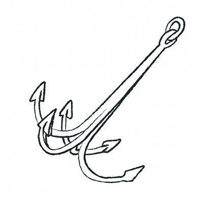

Rodzaje Kotwic
Admiralicji
Kotwica admiralicji (ang. admiralty anchor) – najstarsza konstrukcja kotwicy wywodząca się jeszcze ze
starożytności. Od 1850 na mocy decyzji admiralicji brytyjskiej była obowiązkowym wyposażeniem okrętów
brytyjskiej Królewskiej Marynarki Wojennej. Kotwica admiralicji składa się z trzonu zakończonego dwoma
ramionami, na końcu których wyprofilowane są łapy, oraz poprzeczki. Miejsce łączenia trzonu z łapami nosi
nazwę trentu. Łapy mają za zadanie wbijać się w dno, płużyć i w ten sposób hamować ruch jednostki
pływającej. Belka poprzeczna jest dłuższa niż rozstaw ramion, przez co układa kotwicę na dnie pod takim
kątem, że zawsze jedno z ramion w czasie wleczenia kotwicy zagłębia się w dno. Belki poprzeczne wykonywano z
obrobionego kawałka skały, żelaza lub innego ciężkiego i wytrzymałego materiału. Belkę wykonaną z żelaza
można, po wyjęciu przetyczki, złożyć równolegle do trzonu, przez co kotwica zajmuje mniej miejsca i można ją
położyć płasko na pokładzie.
Patentowa Danforta
Kotwica Danfortha (ang. Danforth anchor) – patentowa konstrukcja kotwicy składająca się z trzonu oraz
ruchomych łap będąca modyfikacją kotwicy Halla. Współcześnie najpopularniejszy typ kotwic stosowany w
żeglarstwie.
Skonstruowana została w Stanach Zjednoczonych podczas II wojny światowej (1940) i stanowiła początkowo
wyposażenie wodnopłatowców typu Catalina. Jej wynalazcą był Richard Danforth. Po wojnie została
rozpowszechniona w jachtingu a następnie adoptowana w Europie. Charakteryzuje się znacznie mniejszym
ciężarem niż kotwica Halla oraz trzykrotnie większą siłą trzymania. W skład jej budowy wchodzą: trzon, ostro
zakończone łapy mocowane na zawiasie i wychylająca się o około 30° w obydwu kierunkach, poprzeczka. Kształt
trentu (miejsca łączenia trzonu z łapami) sprawia, że oś obrotu łap po rzuceniu kotwicy znajduje się nad
dnem, przez co pazury zakopują się pod własnym ciężarem.
Rybacka

Kotwica czterołapowa, rybacka (potocznie drapacz, kot) – typ konstrukcji kotwicy bezpoprzeczkowej składający
się z trzonu i czterech łap zakończonych pazurami.
Kotwice czterołapowe stosowane są głównie na małych, rybackich łodziach żaglowo-wiosłowych bądź szalupach.
Charakteryzują się dużą skutecznością kotwiczenia, jednak ze względu na duże rozmiary oraz małą wygodę
użytkowania są rzadko stosowane. Niekiedy występują jako kotwice pomocnicze i służą na przykład do
podnoszenia z dna zatopionych lin czy łańcuchów. Występuje składana odmiana kotwicy czterołapowej, w której
każda z łap może być złożona wzdłuż trzonu. Innym rozwiązaniem jest wersja wykonana z dwóch ruchomych
elementów z osią obrotu wzdłuż trzonu, tak że łapy składane są na siebie.
Pługowa
Kotwica pługowa, lemieszowa, CQR (ang. coastal quick release) – patentowa konstrukcja kotwicy składająca się
z trzonu oraz ruchomej łapy.
Kotwicę pługową wymyślił na początku lat 20. XX wieku Anglik Geoffrey Taylor. Zaprojektował on łapę w
kształcie podwójnego pługu, która bardzo skutecznie zagłębia się w miękkim dnie. Innowacja polegała również
na zastosowaniu nietypowej osi obrotu trzonu. Jej kąt nachylenia sprawia, że naprężenie łańcucha bądź liny
kotwicznej ustawia łapę tuż pod trzonem. Dzięki swojej prostocie i skuteczności kotwica CQR jest bardzo
popularna w żeglarstwie, szczególnie morskim i oceanicznym. Do wad kotwicy pługowej należy zaliczyć słabe
trzymanie się dna skalistego oraz możliwość łatwego zablokowania na przykład o kamienie.